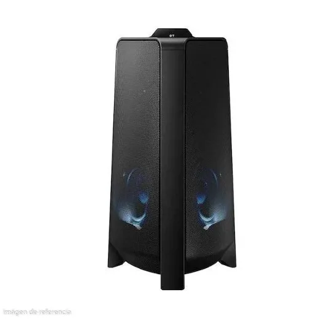
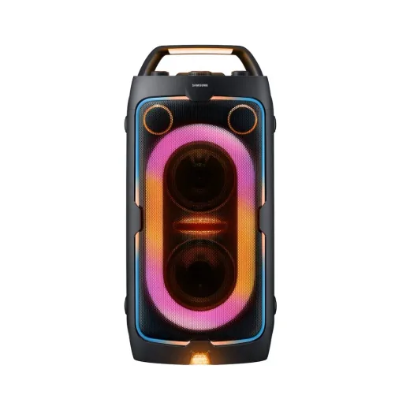
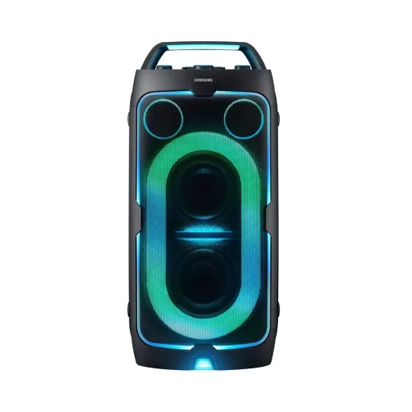
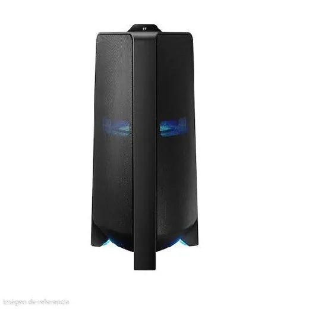

Inicio › Bocinas y audio › Samsung
Bocinas y audio Samsung en Honduras: precios comparados
13 productos Samsung en 4 tiendas (Game Station, Lady Lee, Diunsa, Walmart). Desde L 2,490.
 Tableta Galaxy Tab A7 Lite 32gb SAMSUNGL 3,400En Game Station
Tableta Galaxy Tab A7 Lite 32gb SAMSUNGL 3,400En Game Station Barra de Sonido 20W Dolby 2.0CHL 2,995En Lady Lee
Barra de Sonido 20W Dolby 2.0CHL 2,995En Lady Lee Barra de Sonido 40W Dolby 21CHL 2,794.99En Lady Lee
Barra de Sonido 40W Dolby 21CHL 2,794.99En Lady Lee Barra D/Sonido Inalam Samsung 40WL 2,490En Diunsa
Barra D/Sonido Inalam Samsung 40WL 2,490En Diunsa Barra de Sonido 2.0 Samsung HW-B400FL 2,490En Diunsa
Barra de Sonido 2.0 Samsung HW-B400FL 2,490En Diunsa Barra de sonido samsung 2 1 Hw B450L 4,153.05En Walmart
Barra de sonido samsung 2 1 Hw B450L 4,153.05En Walmart Barra D/Sonido Inalambrico Samsung 300WL 5,490En Diunsa
Barra D/Sonido Inalambrico Samsung 300WL 5,490En Diunsa Barra de Sonido 300W Dolby 21CHL 5,495En Lady Lee
Barra de Sonido 300W Dolby 21CHL 5,495En Lady Lee Barra Sonido Samsung HW-B650F 3.1CH 430WL 6,990En Diunsa
Barra Sonido Samsung HW-B650F 3.1CH 430WL 6,990En Diunsa
Torre de Sonido Giga Party Audio 500WL 8,495En Lady Lee
Party Speaker Samsung MX-ST40F 160 WttsL 9,990En Diunsa
Party Speaker Samsung MX-ST50F 240 WttsL 13,990En Diunsa
Torre de Sonido Giga Party Audio 1500WL 13,995.01En Lady Lee
Preguntas frecuentes
¿Dónde están más baratos los bocinas y audio Samsung en Honduras?
Revisa cada producto: mostramos el precio en cada tienda.